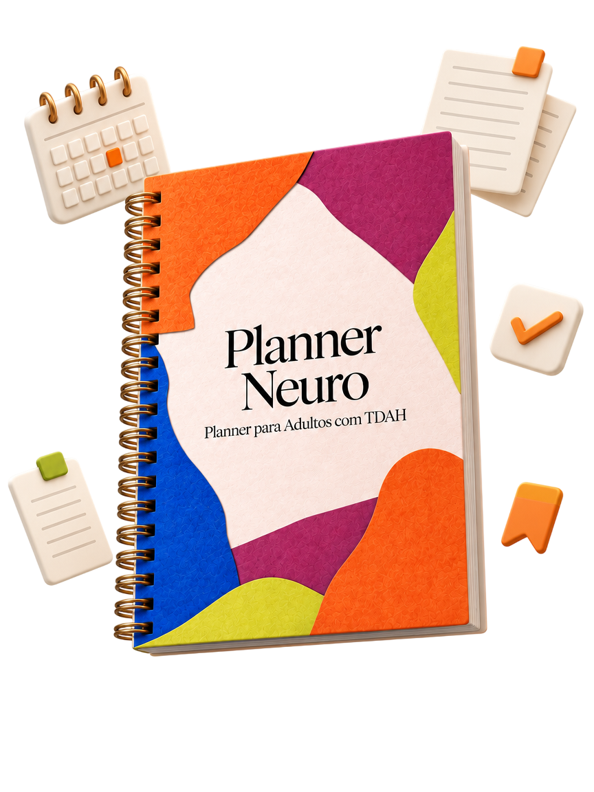
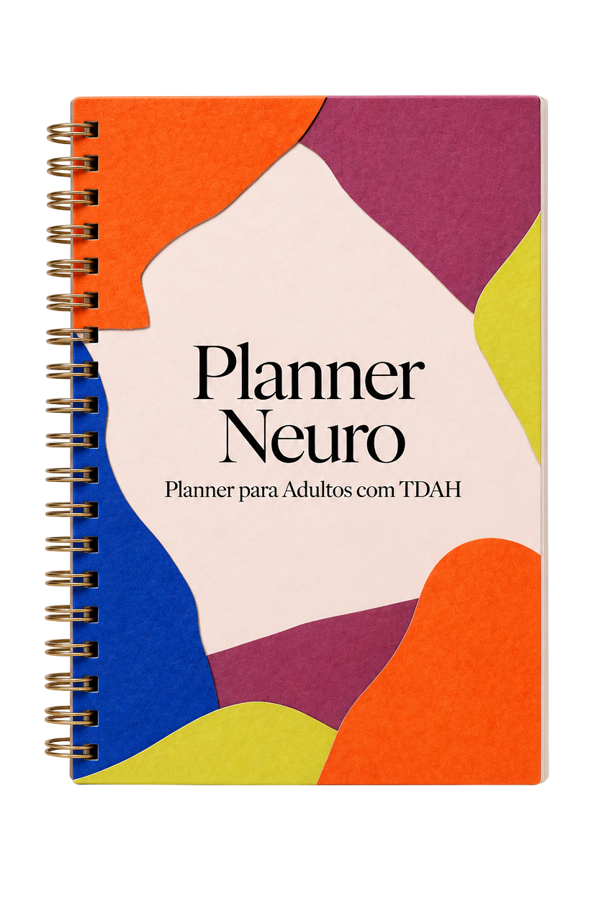
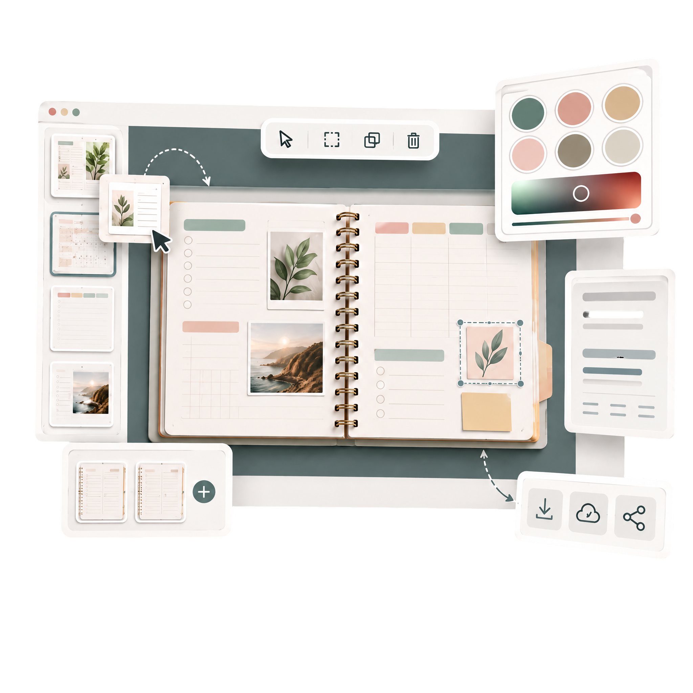

Acorda já atrasada(o), sem saber por onde começar o dia.
Você já tentou recomeçar segunda, dia 1 do mês, ano novo... e ainda está esperando o próximo recomeço funcionar.
Talvez não seja sobre recomeçar de novo. É sobre ter um sistema que não precisa de recomeço.

- Páginas diárias, semanais e mensais
- Não-datado e flexível
- Garantia de 30 dias
um dia comum, hoje
O seu antes.
A lista de tarefas nem foi aberta. A culpa já começou a pesar.
Trabalho incompleto, mensagens sem resposta, mais uma coisa empurrada pra amanhã.
"Amanhã eu recomeço." A mesma frase, de novo. Você nem lembra mais qual recomeço é esse.
o mesmo dia, com o sistema certo
O seu depois.
Abre o planner e vê só 1 prioridade, sem peso, sem lista de 30 itens.
Marcou o que deu. O que não deu simplesmente não vira fracasso.
Ativou o "modo dia difícil" quando precisou, sem culpa, sem drama.
Check-in noturno: "fiz o suficiente." E, pela primeira vez, é verdade.
A ponte entre os dois dias não é força de vontade. É nunca ter tido um sistema que recalculasse com você.
"Um planner tradicional é como um mapa impresso: se você sai da rota, ele não sabe o que fazer. Só mostra o caminho "certo" que você já perdeu. O Planner Neuro funciona como um GPS: quando você sai do planejado, ele recalcula."
Pulou um dia inteiro sem nem abrir o planner?
Os rastreadores sem culpa não marcam "errado". Só seguem o trajeto de onde você parou.
Trânsito parado (dia difícil)?
↻ recalculando: O modo dia difícil assume o controle, reduzindo tudo a 3 coisas, não 30.
Chegou por um caminho diferente do previsto?
↻ recalculando: O que importa é chegar, não seguir a rota exata.
✕Não acreditamos que você precisa de mais disciplina.
✓Acreditamos que você precisa de um sistema que recalcula com você.
✕Não acreditamos em planner que te faz sentir pior quando falha.
✓Acreditamos que progresso imperfeito ainda é progresso.
Pensa nisso como um cardápio, não como uma lista de tarefas.
São mais de 100 páginas ao todo. Você não precisa "consumir" todas, só escolher o que serve pro seu dia de hoje.


Dentro do Planner Neuro
+30 recursos pensados pro seu cérebro, não contra ele
Cada página foi criada pra funcionar com a forma como você realmente pensa, sem forçar rotinas impossíveis.
Bússola das 3 Prioridades
Todo dia começa com no máximo 3 prioridades na tela. Não 10, não 30, só 3. O resto pode esperar.
Trilha dos Pequenos Passos
Hábitos novos não pedem consistência perfeita. Cada passo conta, mesmo pequeno, mesmo fora de ordem.
Galhos da Tarefa Grande
Toda tarefa que parece "um parto" vira pedaços menores, um de cada vez, sem precisar terminar tudo de uma vez.
Ninho do Foco
Um espaço pra guardar o que te ajuda a focar (música, ambiente, ritual), sem depender de lembrar toda vez.
Farol de Saída
Um checklist rápido de segurança (fogão, porta, chave) antes de sair de casa, pros dias em que a cabeça já foi embora antes do corpo.
Semente dos 10 Minutos
Comece a usar em até 10 minutos, sem tutorial de uma hora, direto do seu celular, tablet ou computador.
Nascente do Agora
Não importa se você descobriu isso aos 20 ou aos 50. O ponto de partida é sempre agora, não o quanto você demorou.
Vale do Progresso
Uma vista panorâmica do seu mês, pra ver de longe o que você não consegue ver de perto, no meio do caos.
Seu Planner Neuro já está pronto. Só falta ser seu.
Uma vez pago, fica com você pra sempre. Sem mensalidade, sem pegadinha, sem data de expiração.
Planner Digital
Planner Neuro

de R$97
por R$47
- Mais de 100 páginas prontas pra usar, sem precisar criar nada do zero
- Template editável no Canva incluso. Mude cores, ícones e textos sem baixar nada
- Funciona em qualquer dispositivo: celular, tablet ou computador, em PDF ou na tela
- Formatos A4 e A5. Imprima quantas vezes quiser, pra sempre
- Atualizações futuras inclusas, sem custo extra
🔒 Compra segura
🛡️ Garantia 30 dias
Isso não é um Planner fixo. É um sistema que se adapta a você, peça por peça.
Você recebe também um template editável no Canva, direto no navegador, sem baixar nada. Muda cor, troca ícone, duplica página, apaga o que não serve, porque nenhum sistema fixo dura muito quando o seu foco muda de semana em semana.

Troque cores e fontes
Escolha a paleta que ajuda seu cérebro a focar, não a distrair.
Duplique o que precisar
Numa semana mais caótica, precisa de mais páginas de Brain Dump? Duplica com um clique.
Apague o que não serve
Não usa algum módulo? Remove. Fica só o que seu cérebro realmente usa.
Baixe em PDF de novo
Depois de editar é só exportar em alta qualidade. Preencher no celular, tablet ou imprimir quando quiser.
Template incluso gratuitamente com o Planner Neuro
Gente como você, que também vive com TDAH
Mais de 1.200 pessoas continuam usando esse planner porque ele muda com elas, não o contrário.
★★★★★
"Primeira vez que uso um planner e não me sinto culpada quando pulo um dia. Isso sozinho já mudou tudo."
Camila R.★★★★★
"O modo 'dia difícil' é o que mais uso. Dá pra sentir que quem fez isso também já passou por isso."
Bruno T.★★★★★
"Já tinha desistido de qualquer planner. Esse é o único que durou mais de duas semanas comigo."
Fernanda L.Perguntas frequentes
Porque não foi feito por uma equipe de produto tentando adivinhar o que você precisa. Foi feito por alguém que vive o mesmo TDAH e testou cada página em si mesma antes de mostrar pra qualquer outra pessoa.
Não. Foi pensado pra qualquer pessoa que se identifica com as dificuldades de foco, rotina e organização, com laudo ou sem.
O download é liberado imediatamente após a aprovação do pagamento. Você recebe um email com os links e também pode acessar direto na área do cliente, em qualquer dispositivo. Fica com você pra sempre, sem expirar.
Não tem página datada cobrando os dias perdidos. Você pausa e retoma quando quiser, sem "estragar" nada. Esse planner foi desenhado justamente pra sobreviver às suas pausas, não pra puni-las.
Pagamento único de R$47. Fica com você pra sempre, sem mensalidade. Pra comparar: são menos de R$4 por mês no primeiro ano, menos que um café, por um sistema que você usa todos os dias.
Sim. O PDF funciona em qualquer leitor de PDF com anotação (celular, tablet ou computador), além de poder ser impresso quando quiser.
Você tem 30 dias de garantia incondicional. Se não fizer sentido pra você, é só pedir o reembolso — sem perguntas, sem burocracia.
Não. Ele não substitui acompanhamento médico ou psicológico, é uma ferramenta de organização, pensada pra funcionar junto com qualquer tratamento que você já faça, não no lugar dele.
Sim! Muita gente compra pra um filho, parceira(o) ou amiga(o) que também vive com TDAH. Você recebe o link de download e pode simplesmente repassar.
Isso é pra você, se algum desses cenários soa familiar
Não precisa de diagnóstico formal. Só precisa se identificar com pelo menos um deles.
Cérebro que não pára
Sua cabeça tem 10 abas abertas ao mesmo tempo e uma ideia nova surge antes de você terminar a última.
Coleciona planners abandonados
Já tentou bullet journal, GTD, método XYZ. Todos duraram 2 semanas no máximo, e cada um foi mais um pedaço de tempo perdido tentando se encaixar num sistema que não era feito pra você.
Ciclo da segunda-feira
Todo domingo você promete que "segunda começa do zero", e na quarta-feira o planner já tá em branco de novo.
Foco que vem e vai
Tem dias que você faz 20 coisas de uma vez, e tem dias que levanta e não consegue começar NADA sem explicação.
Tarefa grande = paralisia
Olha pra uma tarefa "simples" e ela parece um bloco de concreto. Não sabe por onde começar, então não começa.
Cansa de se sentir culpada(o)
Cansou de métodos que te fazem sentir fracassada(o) quando você não consegue "seguir certinho" o planejamento.
Seu Planner Neuro já está pronto. Só falta ser seu.
Uma vez pago, fica com você pra sempre. Sem mensalidade, sem pegadinha, sem data de expiração.
Planner Digital
Planner Neuro
de R$97
por R$47
- Mais de 100 páginas prontas pra usar, sem precisar criar nada do zero
- Template editável no Canva incluso. Mude cores, ícones e textos sem baixar nada
- Funciona em qualquer dispositivo: celular, tablet ou computador, em PDF ou na tela
- Formatos A4 e A5. Imprima quantas vezes quiser, pra sempre
- Atualizações futuras inclusas, sem custo extra
🔒 Compra segura
🛡️ Garantia 30 dias